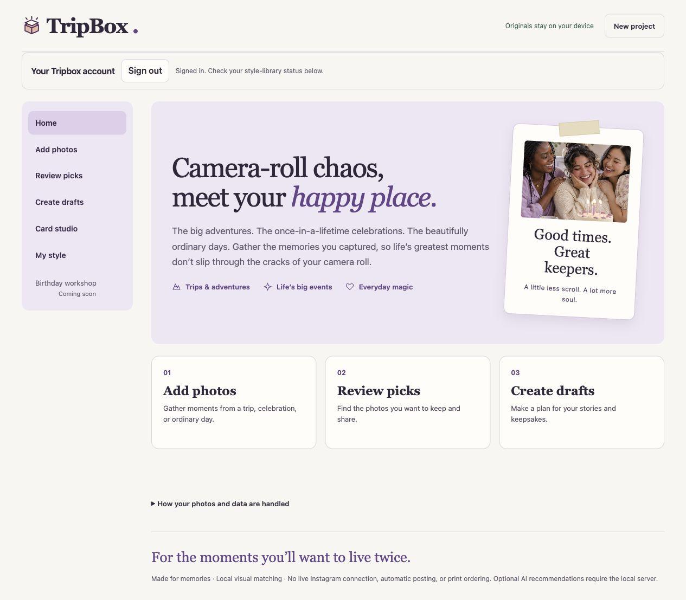
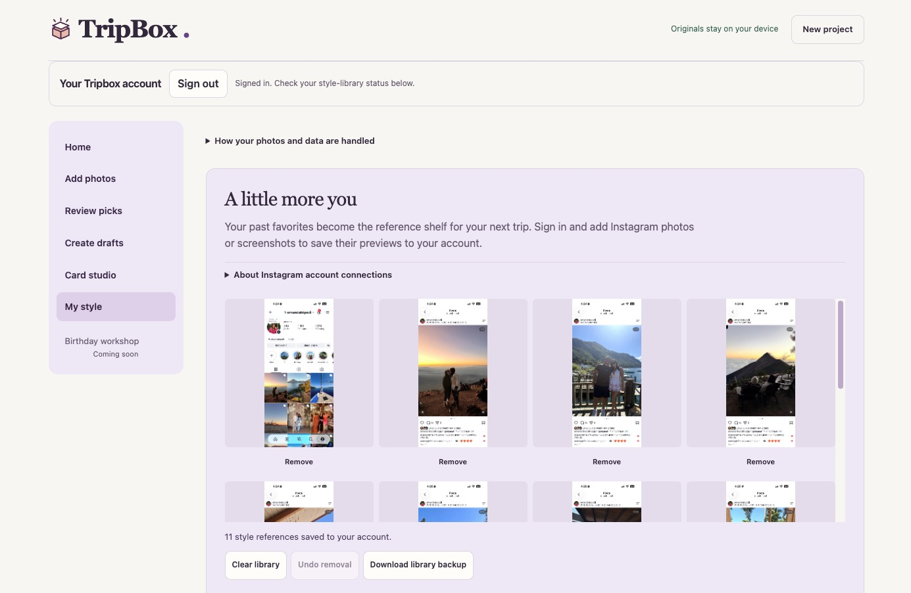
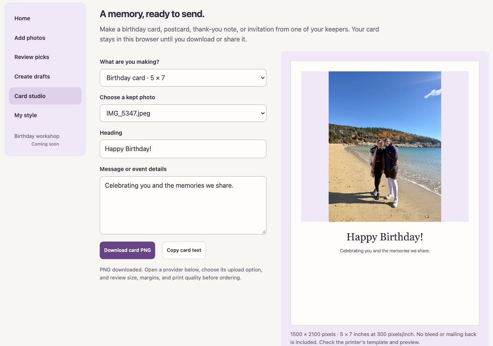

Your trip, your taste, your favorite memories—sorted for sharing and keeping.
Hundreds of trip photos, but nothing posted or printed? Tripbox helps turn camera-roll chaos into favorites for Instagram posts, Stories, photo books, frames, postcards, thank-you notes, invitations, and birthday cards. The goal is to learn your taste, sift through similar shots, and help you choose what to share and keep—without changing the original pictures.
Current Status: Build 3: live keepsake dashboard, Google sign-in, and account-backed style references. The optional AI action still runs only in the local app.
Demo: Import photos → add style examples → review suggested picks and similar shots → create post, Story, book-page, and frame drafts.



Early tester feedback changed the requirements for the review and draft flow. Changing a pick should preserve the user’s place in the gallery. The bottom of review should confirm the keeper count and lead directly to drafts with the current selections. Post and Story drafts should offer the original photos for manual sharing and explain what the separate JSON plan contains.
My Style offers two ways to supply examples for recommendations. Choose favorite photos or screenshots, or select an unzipped Instagram export that contains photos and their JSON references. See the Build 4 before-and-after notes.
The beginner-lane product page and static prototype are served by GitHub Pages. Local visual matching works in the browser; the existing optional AI server is local-only. Render is being considered for a secured live AI service, but no public AI deployment has been verified.
A Supabase project and Google OAuth configuration support live Google sign-in. Google sign-in and account-backed style-library previews are live. The style-library table has RLS and owner-only policies; an anonymous public-key request was denied, a two-identity SQL test blocked cross-account access, and a synthetic reference saved in one live test account did not appear in the other.
Trip photos remain in the browser tab; signed-in users save small style-reference previews and selected style choices to their account. Existing browser references can be imported explicitly. Amanda reports that she signed in on her phone, her saved style carried over to her computer, and she added and reviewed a photo on her phone. An editable 5 × 7 birthday card draft is available in Card Studio; saved birthdays, birthday Story drafts, Instagram integration and face recognition remain future work. See the Build 3 security review.
Who is this for? I’m my first target user: an NYU student who takes hundreds of photos on trips and at social events. I care about my personal style, which pictures I like of myself, and which memories deserve more than a place in my camera roll. I can test with my own photos, then recruit friends and classmates; their needs have not yet been validated.
The painful “Before” workflow: I scroll through similar shots repeatedly, make separate choices for Instagram and keepsakes, and lose track of favorites across albums and screenshots. Posting gets delayed, and photo books and prints never happen.
The “After” workflow: I add a trip, supply examples of my taste, and choose what I want to make. Tripbox suggests picks by purpose and groups similar shots. I review and replace selections, then arrange drafts for sharing and keeping. An optional local AI action sends up to 12 trip previews and 3 supplied style references through OpenRouter for up to 6 editable Post suggestions. Learning a personal model and connecting directly to Instagram remain future work.
How personalized selection works today: Tripbox can propose picks instead of requiring every photo to be chosen manually. Local matching uses visual features, supplied style examples, subject tags, and current-project keeps/skips. The optional AI action uses up to 12 non-skipped previews and 3 style references to suggest Post picks. It does not train or improve a persistent preference model from your review history. Saved style references can be reused; automatic learning from Keep/Skip choices across trips is future work.
Current limits: No overall import or favorites cap; only each carousel is limited to 20 photos. A simulated 240-photo-record check passed, but performance with 200+ real phone photos is unmeasured. Personal, Creator, and Business users can supply examples manually; no live Instagram connection is configured. Drafts can be reordered and exported as a planning file, but trip sessions and finished print-ready books are not saved. Card PNGs are flat artwork, not editable Canva projects or guaranteed printer-ready files; bleed, postcard backs, addresses, and vendor-template checks remain in the chosen service. Card text clears on refresh. Signed-in style-reference previews and selected style choices save to the account; original trip photos and draft sessions remain local. AI evaluates a small batch, not an entire camera roll, and cannot identify who is in a photo.
Riskiest Assumption: The suggestions need to feel like my taste and save me time. A sharp photo is not necessarily my favorite expression or most meaningful memory. The current color, detail, orientation, and like/skip signals cannot fully capture that. Amanda’s November 15 feedback: it works well, but photo selection needs to understand her preferences better. This is qualitative builder feedback, not a measured user study.
How I’ll test it: Start with a 12-photo batch from one real trip. Mark my favorites before asking AI, then compare the returned suggestions with my prior keeps, record rejections/replacements, and time review versus manual selection. Repeat with a friend or classmate. Technical tests with synthetic images check the request path only; they do not validate taste or time savings.
Simple Architecture: Browser imports and resizes local photos → optional explicit preview-sharing consent → POST /api/recommend on the laptop’s Python server → OpenRouter /chat/completions with nvidia/nemotron-3.5-super-vl:free → validated photo IDs and explanations → editable Post picks → drafts. Local matching and approximate duplicate grouping remain available without an API call. Card creation uses the kept original photo and a browser canvas; the PNG and copied text are downloaded locally. Opening a provider link sends no photos or messages automatically. The new card studio also works on the public static demo.
I pay $20/month for my coding subscription. Build 1 allocation: ~$5.60. Build 2 allocation: ~$5 and Build 3 allocation: ~$5 using a four-week month. With 5 hours/week, that is an estimated $1/hour allocation, not a usage-based bill. Verified free-model requests reported $0 API cost. Subscription allocation is not additional spend.
Default: NVIDIA Nemotron 3.5 Super VL (free) through OpenRouter. Listed input/output token prices: $0, checked November 12. Example 100 runs/day × 30: $0 token cost, but free-tier quotas may not permit that volume. No paid fallback is configured. Availability and rate limits can block calls. For any future paid model: (input tokens × input price + output tokens × output price) / 1,000,000. The app displays returned usage; confirm actual charges in OpenRouter Activity.
PostHog instrumentation is installed on this page and the app: pageviews, masked autocapture, clicked_try_product, and AI start/complete/failure events. Public/local pageviews, clicks, clicked_try_product, and AI start/completion events were received. A real masked replay was played November 12; a dashboard screenshot was saved for submission. No external user results are claimed.
Love the look and feel now! It has really gone up a notch since last week and the aesthetic doesn't feel AI-y, but looks really elite. Looks and feels AMAZING!! Go queen!Their comments highlight the redesign’s visual polish and how much it improved since last week. The PostHog replay shows the tester opening the live prototype in one click from the Product Page.